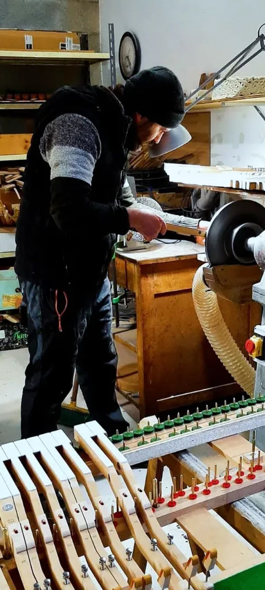
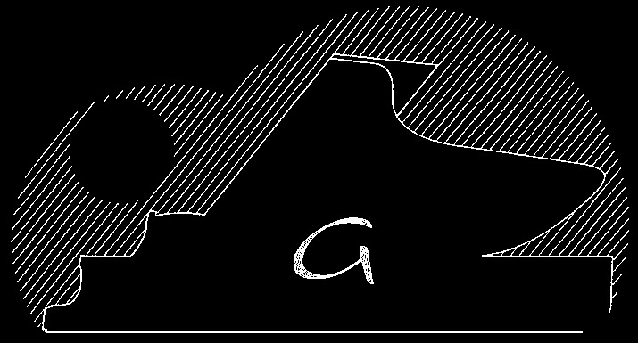

Il nostro percorso inizia nel 2006, quando Andrea Colina entra in bottega per imparare il mestiere di accordatore e tecnico del pianoforte. Negli anni lavora sia come dipendente sia in proprio, collaborando con molte aziende del territorio nel servizio concerti, nel restauro e nell'accordatura.

Nel 2023 raccoglie l'eredità di Carlo Gandolfo, titolare della ditta Gandolfo Tastiere, il laboratorio a cui si affidava da anni e da cui riceve il mestiere della costruzione di tastiere. Da quel momento A.R.C. si dedica quasi esclusivamente alla costruzione e al restauro di tastiere per pianoforti, organi, clavicembali, spinette e altri strumenti.
Siamo la terza generazione di una linea di costruttori che nasce con i fratelli Barra e prosegue con Gandolfo. Lavoriamo legni pregiati, osso e materiali della tradizione per offrire a ogni musicista un tocco preciso e una meccanica sempre pronta e reattiva.
